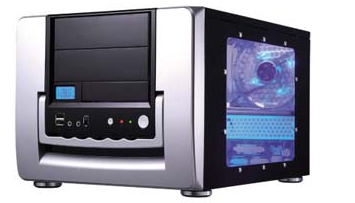

La carcasa¶
La carcasa (o caja) de un equipo es el esqueleto metálico que contiene los diferentes componentes internos.
Partes:¶
El chasis, que es el esqueleto interno metálico que va a soportar la instalación de los diversos componentes.
La cubierta, que será la parte que hace de “tapa” de la caja, por la cual se accede a la parte interna, y que habitualmente, en las torres, es una de los paneles laterales.
El panel frontal, donde estará situada la ranura de toma de aire para ventilación, y las partes que quedan al exterior de las bahías donde se sitúan las unidades de almacenamiento, así como algún acceso externo a conectores usb o de audio.
El panel posterior, donde saldrán al exterior todas las conexiones habituales para elementos externos (puertos usb, conectores audio, conexión VGA para pantalla, puertos para teclado y raton, …..), así como la salida de ventilación y corriente de la fuente de alimentación.
La pared lateral (al fondo) donde se instalará la placa base.
La ranuras traseras (a la izquierda) por donde se mostrarán al exterior las conexiones de las diversas placas electrónicas que se instalen en la placa base.
Las bahías (a la derecha) donde se colocarán las unidades de almacenamiento (unidades de cd, dvd 5 ¼, discos duros 3½ ).
Funciones¶
Protección de los componentes electrónicos internos.
Ventilación, esencial por las altas temperaturas que pueden alcanzar los diferentes componentes electrónicos en funcionamientos, por lo cual será conveniente la utilización de los ventiladores internos y de las rejillas de respiración.
Tamaños¶
Barebone (Mini iTX, HTPC): Son de pequeño tamaño. Los barebone tienen el problema del calentamiento. Por lo general, poseen una o dos bahías de 5 ¼ y una o dos bahías de 3 ½.
Minitorre: 1 o 2 bahías de 5 ¼ y 2 o 3 de 3 ½, Su calentamiento es normal y no tiene el problema de los barebone.
Sobremesa: No se diferencian mucho de las minitorres, a excepción de que en lugar de estar en vertical se colocan en horizontal sobre el escritorio.
Mediatorre o semitorre: Normalmente son de 4 bahías de 5 ¼ y 4 de 3 ½. La diferencia de ésta es que aumenta su tamaño para poder colocar más dispositivos.
Torre: Es el más grande. Puedes colocar una gran cantidad de dispositivos y es usado cuando se precisa una gran cantidad de dispositivos.
Servidor: Su diseño está basado en la eficiencia donde los periféricos no es la mayor prioridad sino el rendimiento y la ventilación.
Rack: Los servidores rack se atornillan a un mueble, este tipo de servidores suele colocarse en salas climatizadas debido a la temperatura que alcanza.
Modding: El modding es un tipo de gabinete que es totalmente estético incluso se podría decir en algunos casos que son poco funcionales.

Portátiles: El tamaño suele depender del monitor que trae incorporado.